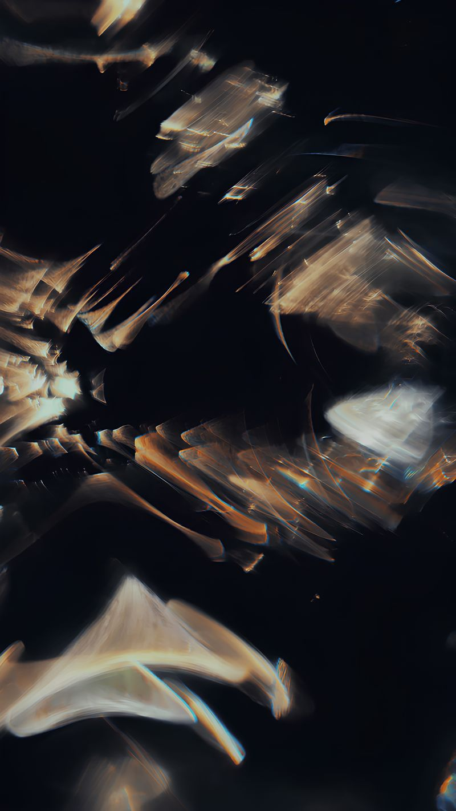

A distributed compute node for mobile robots — high-current field-oriented motor control and sensor fusion, all over CAN-FD. One node per actuator, daisy-chained back to an onboard Jetson, so every joint gets local hard-real-time control while the host just plans.
This is a v1.0 board — hardware is fabricated and firmware bring-up is in progress. Here is the source, the specs, and how to power it without letting the magic smoke out. Not yet hardware-validated — treat everything here as work in progress.
FlexNode fuses a field-oriented motor controller and a sensor-fusion front end onto a single compact PCB that hangs off a CAN-FD bus. Many nodes daisy-chain back to a host, so each limb or joint runs its own tens-of-kHz current loop locally while the host does high-level planning.
It began as a fork of the mjbots moteus r4.11 controller — the proven power stage, gate driver and STM32G4 core are kept intact — and adds the digital sensing and I/O a distributed robot node needs: a 6-axis IMU, optional multizone ranging, a servo/aux port with onboard current sensing, addressable status RGB, and everything reported over CAN-FD.
The design target is CatBot, a lightweight, highly agile jumping quadruped: FlexNode drives its geared hip actuators and lighter leg motors, one node per actuator, all chained to the onboard Jetson.
Each actuator carries its own FlexNode bolted to the back of the motor — closing the FOC loop millimetres from the windings and the magnetic encoder, with only a CAN-FD pair and power leaving the joint. Split the chain left/right (or front/back) and a single bus fault takes down one side, not the whole robot.
Bus voltage: up to ~44 V (10S LiPo). Bus ceramics are rated 50 V and the power FETs 60 V — sized for that rail, with no margin to spare above it.
⚠ Never hot-plug a FlexNode onto a live pack. Cable inductance and the ceramic bus form an LC tank that can ring toward 2× and blow past the 60 V FETs. Always bring the bus up through the core board's pre-charge — or a current-limited supply on the bench.
Firmware note: the motor phase A/C outputs are swapped in copper relative to stock moteus; the FlexNode firmware compensates. Do not flash unmodified moteus.
Status: v1.0 is fabricated but not yet hardware-validated. Everything here is subject to change until the first article is verified.
The firmware is a fork of moteus, keeping the FOC inner loop, FDCAN protocol and bootloader while remapping the reused pins and adding the sensor/aux features. Key deltas: board ID hardcoded to {family 0, hw_version 8} (the strap pins are repurposed), pin remaps (PC6 encoder CS, PB11 5 V sense, PC13 servo/aux), and the phase-order fix.
Flash over the FLASH header (SWD — NRST · CLK · DIO · 3V3 · GND), or via the moteus bootloader over CAN.
1 · Build — in WSL (Ubuntu 22.04):
cd moteus-r4-parent && tools/bazel build --config=target //:targethw_version 8, the pin remaps, and the phase-order fix — before it ever drives a motor.2 · First flash — virgin board, over SWD: connect an ST-Link / J-Link to the FLASH header (NRST · CLK · DIO · 3V3 · GND) and write the combined bootloader + application image to 0x08000000 with STM32CubeProgrammer or OpenOCD.
3 · Updates — over CAN, once the bootloader is on: with an fdcanusb or pi3hat on the bus,python3 -m moteus.moteus_tool -t <id> --flash <firmware.elf>
4 · Calibrate — python3 -m moteus.moteus_tool -t <id> --calibrate, but only after the phase-order fix is in the flashed firmware; otherwise calibration fights a drive/sense pairing that lands on the wrong winding.
WIP — the port is not hardware-validated yet, and stock moteus binaries will not run correctly (repurposed strap pins, swapped phases). The living reference is docs/firmware.md.
Everything leaves the board on JST-PH headers or gold-plated through-holes at the edge. Connectors, by silkscreen label:
Pin order for FLASH and the power pads is fixed as listed; confirm pin-1 orientation on the aux headers (EXT / CAN) against the board silk. A fully labelled pin-map overlaid on the board render is the next addition here.
Every node hangs off one differential pair; the fast data phase carries both commands and telemetry. Nodes daisy-chain, with termination only on the leaves — wiring a limb is two wires plus power.
The current loop closes millimetres from the windings, not across the robot. The Jetson only plans; each joint owns its own hard-real-time control. Splitting the bus per side buys fault isolation for free.
The power stage, current limits and every BOM part number were independently checked against datasheets before committing copper — inductor sizing vs. the gate driver's current limit, cap voltage ratings, footprint/pinout matches, the lot.
FlexNode is open hardware, inheriting moteus's Apache-2.0 license. Schematics, BOM and gerbers are in the repo.
hw_version hardcode, pin remaps, phase-order fix